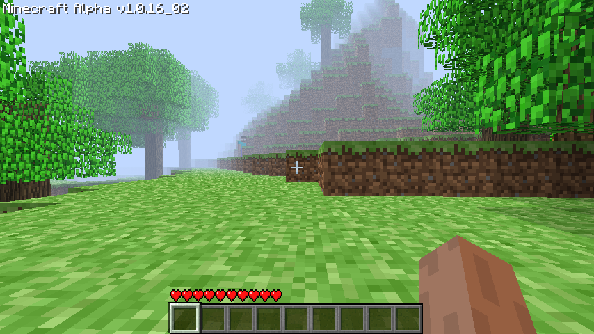

Minecraft: The Hidden Version
Does anyone remember an java PC game from the early 2009s called "Minecraft"? It's mainly a block game, you can play survival mode as well as creative mode in the game
Unlike most games, however,This game in a sense there are some hidden versions.
People notice that the hidden versions of this game are different for each, and not just one hidden version has at least 6 or 7, here are some descriptions of the hidden versions:
2nd of the hidden versions sometimes had no music,even if the music option is on,and sometimes the music sound like an extremely low-quality recording of a hair dryer playing in the background. The remaining music had an extremely loud high-pitched ringing throughout the game(At this time, even if the music and sound options are turned off, the game still has sound) that caused severe ear drum damage to those who managed to get that far.
Another hidden version(1st hidden version) when the game is open will show a man was the picture of Zach Brown himself. He was a large, round-faced, overweight man with large beady eyes and red spots on his cheeks.But the whole picture is red and there are other faces on his face and these faces are painful faces，make people feel uncomfortable.
Most people who played these hidden versions reported that some versions(may is the 3rd,4th hidden version) spoke to them in a quiet, harsh voice and threatened them to keep silent about something. However, none of them remember what it was, and others claim to have met herobrine in the game
A psychologist who saw these players reported that the level of horror on their faces disturbed the players as they recounted the details of their nightmares.
Many players broke down in tears in the process, begging their families to "save" them. However, a direct relationship to the game itself cannot be determined in these few cases, as not all players suffer the same adverse effects.
For obvious reasons, not many of these hidden versions are downloaded. It remained relatively unknown until a few years ago, when PC Game hackers got hold one of these versions(the 5th hidden version) of the file and started digging through for it.
They using decompilation software to managed crack the code of the game and found out that if you wait 2 days, 3 days, 5 days, 10 days, 11 days in real time, something happens, the part of the code below cannot be decompiled, so , they started experimenting, and what they found was very disturbing and caused many of them to quit the expedition altogether.
According to the reports left by these hackers, if you wait 10 days in real life, the game will behave very strangely. The game crashes and closes violently, writing a bunch of files to the user's System32 directory so much that the memory is almost completely filled.
The .png files are reportedly pictures of people with severely deformed faces who appear to be screaming in pain and pain, their eyes appear to be bleeding from their tear ducts, and their outer skin has been ripped off in multiple places .
Strangely, if the user tries to delete these files, the computer will violently freeze and blue screen, causing permanent and irreparable damage to the user's hard drive.
Hackers discovered that this was due to a piece of code in the pre-game code that was triggering while waiting for 10 days. After removing these codes, they were able to wait 11 days which was the last time.
Unfortunately, all the original hackers refused to discuss what they waited 11 days to see. They both became extremely paranoid and reclusive, refused to talk about anything gaming-related, and displayed surprisingly extreme symptoms of PTSD.
Most of them ceased to be able to form coherent sentences within a week and, within a month, all of them went missing. All remaining copies of the game file were destroyed.
To this day, no one knows what was in that game that caused them so much psychological damage. Maybe it's better that way.
Two years after this incident, a man was arrested after trying to kidnap an eight-year old girl from a grocery store. Through DNA and fingerprint analysis, the man was identified as one of the original hackers who waited 11 days for the game at the time.
He wore a red hat, and his face was indescribably malicious and crazy. When interrogated, the man will only say one thing.
"I'm herobrine. Shhh."
Now, these hidden versions have appeared again, unfortunately we only found 6th one of them, there may be a seventh of these versions, but we have found no information on the seventh hidden version do you want to try the 6th hidden version?
We gave the sixth version to some players to play, according to them, they encountered Herobrine after playing for a while, after which the game would crash and automatically download a new jar from the Internet.
Immediately after this they restarted the computer and turned on the anti-virus program and they never dared to play again
Maybe the next player is you, or not.
3/9/2022
Download
Screenshots
